一张图看懂这篇论文
论文先用一台新仪器建立"看得见"的微观表征方法，再据此解释三件事：为什么器件发热、为什么会效率滚降、蓝光为什么会坏。下面是全文最硬的几个数字。
造一台能"看见"载流子的仪器
基于泵浦-探测思想发明电激发瞬态吸收光谱仪（EE-TA），把 ΔA 信号拆成"载流子填充引起的漂白"与"电场引起的斯塔克效应"两部分，从而分层读出各功能层的载流子浓度、注入动力学与电场分布。
少放几个发光中心，反而更亮更冷
理论推导表明发光强度正比于准费米能级劈裂、而亮度与发光中心密度成反比。改用大尺寸单层全梯度合金量子点后，低电压下亮度大幅提升，产热骤降，寿命随之延长。
滚降与蓝光退化，元凶都是"高能电子泄漏"
电子因强声子瓶颈滞留在高能级，越过高势垒泄漏进有机空穴传输层：既直接损失效率（滚降），又破坏空穴传输层（蓝光退化）。限域高能电子、降低电子平均能量即可同时改善两者。
量子点为什么能发光：把尺寸当调色盘
量子点是三维受限的半导体纳米晶。尺寸越小，量子限域越强，带边跃迁能量越高——于是同一个材料体系，靠改变粒径就能从蓝光调到红光。
发光峰位 590 nm · 橙黄光
拖动滑块，看量子点"变色"
量子限域效应由 Efros 与 Ekimov 用考虑库仑相互作用的三维无限深势阱模型解释：尺寸减小时最低束缚态能量升高，带边光跃迁能量随之增大。 这也是红、绿、蓝三色量子点可以用同一套化学体系分别合成的物理基础。
商业化路上卡着六道关
论文绪论系统梳理了 QD-LED 走向市场必须解决的问题，也解释了"机理不清"为什么会成为连锁瓶颈。
降低启亮电压
空穴传输层 HOMO 与量子点价带之间存在约 0.5–1.3 eV 的巨大注入势垒，靠热辅助空穴注入才能越过。降低势垒或选用低带边简并度的有机空穴传输层材料可降低启亮电压。
PLQY ≠ 器件效率
高 PLQY 量子点未必做出高效器件，而带缺陷量子点却可能接近 100% 内量子效率：电场使波函数移向壳层表面、带电激子俄歇复合、经带尾态漏电、界面电荷转移引起 PL 猝灭，都会让电致发光与光致发光"对不上"。
20% 上限已被打破
Greenham 模型给出外耦合效率约 1/(2n²)（n≈1.5 时约 20%）。Tanaka 报道 29% EQE、宋娇娇报道 30.9% 红色 QD-LED 后，传递矩阵计算表明合适折射率与厚度下可超 30%，关键在于提升面内偶极子取向比例（各向同性仅 2/3，OLED 已达 77%）。
全彩显示的最大瓶颈
旋涂红/绿 QD-LED 的 T50 已达 1.25 亿小时与 257 万小时，而蓝光只有 80 377 h；喷墨打印的蓝光甚至只有 46 h。蓝光量子点带隙大，电荷积累与漏电更严重，常用有机传输层的 C–N 键带负电时键能变弱、易断裂。
RoHS 限镉 100 ppm
高性能器件多用 CdSe 基量子点，而欧盟 RoHS 指令限定电子元件中镉浓度不超过 100 ppm。InP 基红光、ZnSeTe 基蓝光在 HF 辅助壳层生长下，EQE 峰值已分别达到 21.4% 与 20.2%。
ZnO 纳米颗粒的两面性
几乎所有高性能 QD-LED 都用 3–6 nm 的 ZnO/ZnMgO 纳米颗粒作电子传输层，但其表面悬空键多、近乎非晶、极不稳定，带来难以预测的亮度变化；结晶度更好的溅射 ZnO 反而效率与寿命更差。
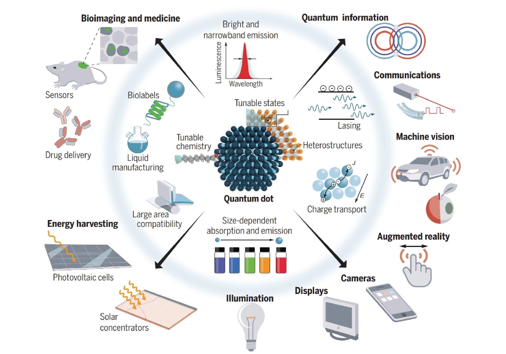
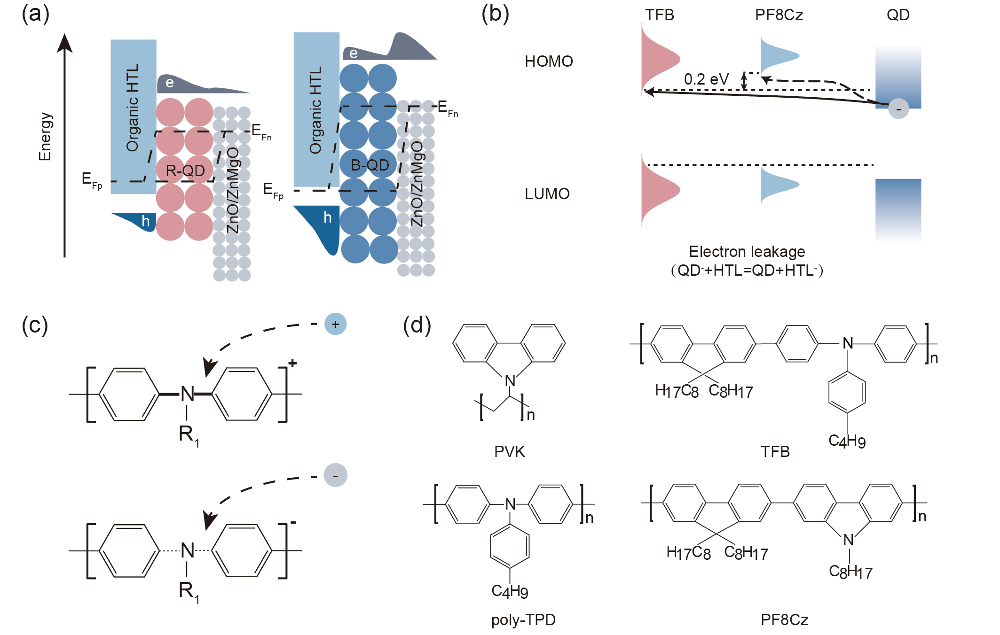
器件长什么样：五层夹心，各司其职
典型结构为 ITO / PEDOT:PSS / TFB / 量子点 / ZnO(ZnMgO) / Al。点击任意一层，看它在发光过程中扮演什么角色、以及它如何参与退化。
点击左侧任意一层
器件由"阳极—空穴注入层—空穴传输层—量子点发光层—电子传输层—阴极"构成。电子从 ZnO 一侧注入，空穴从 TFB 一侧注入，二者在量子点中相遇形成激子并辐射复合发光。
- 电子注入势垒小，注入极快（<100 ns）
- 空穴注入势垒大（0.5–1.3 eV），是决定发光启亮延时的"慢组分"
- 正是这个不对称，埋下了效率滚降与蓝光退化的种子
激子是怎么形成的
① Förster 共振能量转移：载流子穿过量子点层，在传输层中先形成激子，再通过能量转移把能量传回量子点，有效距离约 10 nm。Madigan 等人把单层量子点嵌入空穴传输层、距界面不到 10 nm，使 EQE 提高 50% 以上。
② 电荷直接注入：电子与空穴先后注入同一个量子点形成激子，被认为是杂化结构的主要机制。金一政等人证明电子先注入形成带负电中间态，再经库仑吸引注入空穴。
电压低于带隙，也能发光
使用 ZnO 作电子传输层的 QD-LED 在低于量子点带隙的驱动电压下就出现电致发光（能量上转换），且内量子效率超过 50%——由此排除了俄歇辅助与三重态-三重态湮灭机制。目前较一致的解释是热辅助的能量上转换：注入带边的载流子通过与声子相互作用与电荷碰撞达到热平衡分布，从而发出高于驱动电压对应能量的光子。
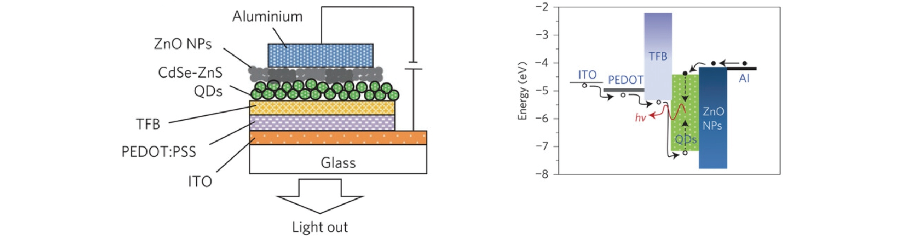
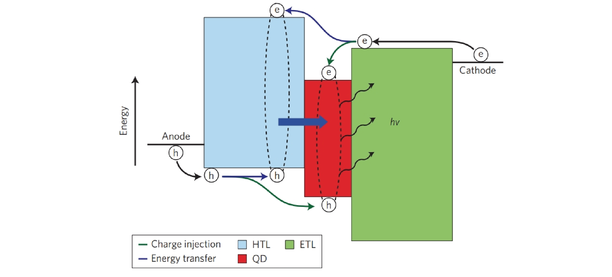
发光机理：七个关键环节
量子点是分散的发光中心，载流子难以横向迁移，传统半导体的漂移扩散与复合模型不再适用——决定发光的主要是"激子生成概率"。以下七个环节构成本文的物理主线。
电子跑得快，空穴跑得慢
3 V、10 µs 电脉冲下，电子在 <100 ns 内就注入量子点；而器件要过 约 600 ns 才开始发光，并在 约 3 µs 达到稳定。原因在于空穴必须先在传输层中大量累积、再越过与量子点之间的价带势垒，且空穴迁移率低于电子。
瞬态电致发光的动力学由少数载流子决定，因此在 II-VI 量子点器件中，Tr-EL 的上升沿实际上是一把"空穴注入秒表"——本文后面判断蓝光退化，靠的正是这把秒表。
把经典复合公式改一个字
块状半导体中电子与空穴可自由相遇，复合速率写作 R = k·n·p。但在 QD-LED 中量子点是空间分离的发光中心，电子与空穴必须先进入同一个量子点才能复合，于是需要乘上激子形成概率 r。
本文据此提出蒙特-卡洛量子点激子复合模型：以注入载流子数除以量子点总数作为注入概率，在 100×100 个量子点的样本中逐步模拟随机注入与复合，复现了激子产生速率与剩余电荷数的演化。
发光强度由准费米能级劈裂决定
电子与空穴的准费米能级分别为 ηC 与 ηV，其劈裂 EFS = ηC − ηV。由爱因斯坦吸收、受激辐射、自发辐射速率与热平衡条件可以解出光子态密度，最终得到发射强度随劈裂指数增长：
进一步推导给出 I = r · ne · nh，且系数 r ∝ 1/n²（n 为量子点密度）：在注入电荷不变时，发光层中量子点越少，单个量子点的带电填充比例越高，劈裂越大，亮度越高。这是"用大尺寸量子点换取低电压高亮度"的理论出发点。
声子瓶颈：电子赖在高能级不走
电子被注入量子点后，本应通过发射声子迅速弛豫到导带底。但当低能态已被填满、或声子通道不足时，电子会长时间停留在高能级——这就是声子瓶颈效应。过去基于光激发的研究中电子与空穴成对产生，空穴辅助的超快弛豫让这一效应很难观察；本文的电激发过程里电子浓度远大于空穴浓度，漂白信号主要来自"没有空穴的量子点"，因而首次直接观测到了它。
后果很严重：高能电子的波函数更离域、更容易越过空穴传输层势垒泄漏出去。电压越高，高能电子占比越大，泄漏概率越高。
俄歇复合：曾被当作主因，实测被排除
当量子点中已有激子、又进来一个额外载流子时，激子复合的能量会转移给该载流子，把它激发到高能级并最终以热耗散掉——这就是俄歇复合。它长期被视为效率滚降与蓝光短命的头号嫌疑。
本文用漂白信号幅度定量标定量子点中的平均电子数：出现效率滚降时 <Ne> 只有 0.1–0.3；按泊松分布，7 V 下能被两个电子占据的量子点仅占 3.3%，滚降起始电压处更低至 约 1.6%，且呈单激子衰减动力学。既然多载流子占据概率如此低，俄歇复合就不可能是滚降主因。
强电场会削弱发光，但正向偏压下没那么强
电场会削弱核对波函数的束缚，使电子与空穴波函数向壳层表面移动，增加表面缺陷捕获与载流子泄漏的概率。反偏压下的光致发光测试确实看到效率下降，因此"电场诱导猝灭"一度被用来解释效率滚降。
但本文通过分解电激发瞬态吸收光谱中的斯塔克效应信号发现：7 V 正向偏压下的斯塔克效应仅相当于 −0.2 至 −0.5 V 反偏压；比较加与不加 −0.3 V 反偏压的光致发光强度，下降 不到 1%。原因是正向偏压抵消了内建电场，注入载流子又有介电屏蔽。故电场猝灭也不是滚降主因。
两条"不发光"的旁路：能量转移与带尾态漏电
Förster 共振能量转移：也可反向发生——传输层中形成的激子把能量传给量子点发光。它强烈依赖供体-受体距离（有效距离约 10 nm），在量子点层很薄、使用有机传输层的器件中较常见。
带尾态漏电：有机空穴传输层的 LUMO 本应比量子点导带高约 1.0 eV，理论上难以漏电；但有机分子的能量无序显著增加了漏电概率——电子可经空穴传输层的带尾态泄漏而不形成激子，造成 PL 与 EL 效率的差异。蓝光量子点导带能级更高，漏电更易发生。采用低电子亲和力、刚性更高的 PF8Cz 作空穴传输层可有效抑制漏电。
界面电荷转移引起的 PL 猝灭：传输层与量子点间若存在有效电荷转移，量子点会带上净电荷，光激发产生的激子与已有电荷结合成不发光的带电激子。但在电致发光中电子与空穴并非同时注入，带电量子点更倾向于注入相反电荷形成发光激子，因此这种猝灭并不必然损害内量子效率。
把"看不见"变成"看得见"：电激发瞬态吸收光谱
这是全文的方法学基石，也是理解后面所有结论的前提：用一束电脉冲"泵浦"器件、一束超连续白光"探测"器件，从吸光度的变化里反推出每一层里有多少载流子、电场有多强。
电脉冲泵浦
任意波形发生器产生 1 kHz、10 µs 电脉冲驱动器件。脉冲间隔远大于半导体中电荷的自然耗散时间，保证每次测量前电荷完全弛豫；10 µs 宽度足以让各层注入载流子达到平衡。
超连续白光探测
Leukos 超连续白光激光器以 2 kHz 输出 350–2500 nm 探测光，覆盖紫外到近红外；两台高速线阵列相机分别采集透过器件的信号光与参考光，以扣除约 1% 的激光功率抖动。
ΔA 的四类来源
基态漂白（GSB）与受激辐射（SE）给出负 ΔA；激发态吸收（ESA）与光诱导吸收（PIA）给出正 ΔA。II-VI 量子点价带简并度远大于导带，漂白主要由电子贡献，故可提取电子动力学。
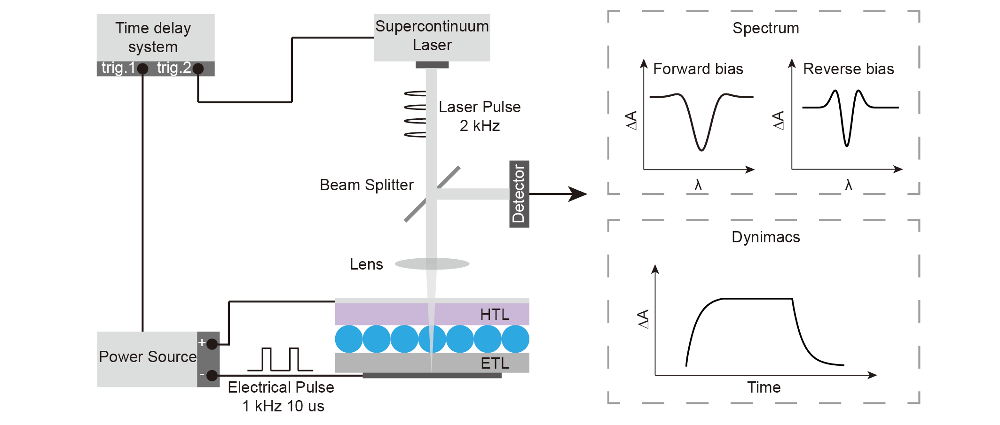
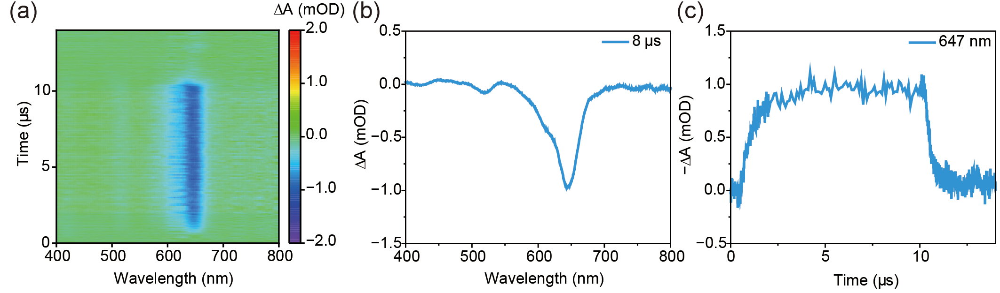
从朗伯-比尔定律到"漂白 + 斯塔克"
探测光经铝电极反射后两次穿过量子点层，因此吸收项系数为 2。把吸收截面 σE 对电场做泰勒展开后，ΔA 表达式自然分成三项：
第一项正比于载流子填充（漂白），第二、三项分别是一阶与二阶斯塔克效应（电场）。由于各功能层吸收峰一般分开，只要选对波长，就能把不同功能层的信号分离出来——这正是本文能做"分层诊断"的原因。
五种手段互相印证
- 瞬态电致发光（Tr-EL）：五个阶段（延时、快速上升、近饱和上升、饱和、衰减），测发光启亮延时
- 瞬态电流（Tr-C）：呈电容充放电特征，正反向峰值不对称说明界面累积载流子被复合消耗
- 瞬态荧光寿命（Tr-PL）：判断量子点自身复合速率是否变化
- 电吸收（EA）：以 1 kHz 正弦电压叠加直流偏压调制内部电场，低噪声读取斯塔克信号
- 电容-电压（C-V）：正向电容主要由 HTL/QD 异质结决定，用于追踪界面载流子积累
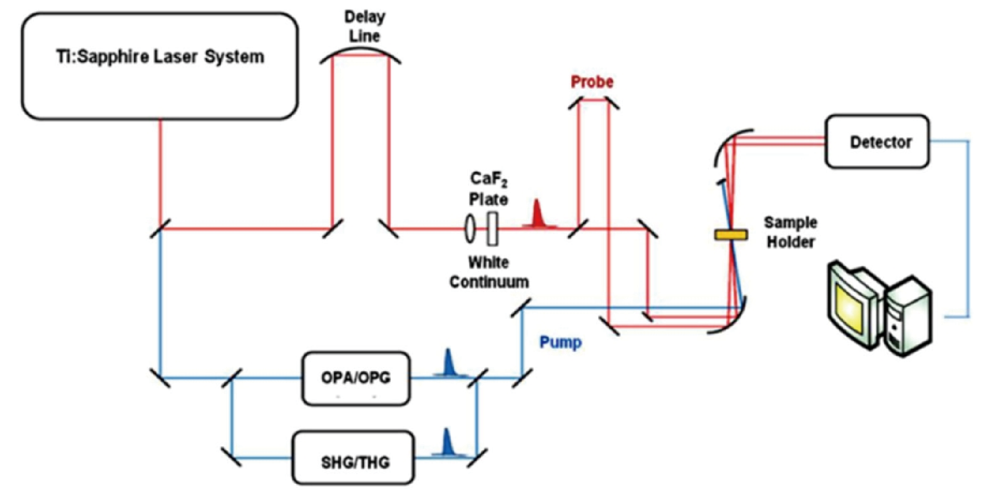
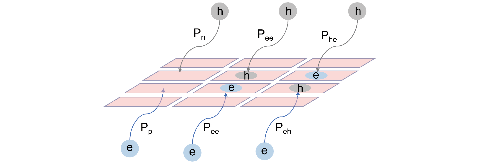
器件工作模型拟合结果
以 3 V、1 kHz、10 µs 脉冲数据拟合 Tr-EL 与 EE-TA 公式（忽略空穴泄漏，令 k₂ = 0）。
少放几个发光中心：低电压、高亮度、几乎不发热
产热功率 Q = VI − Nℏω。带隙电压以上器件只制热，同一亮度下电压越高发热越多；带隙电压以下则亮度越强制冷越强。所以出路只有一条：在低驱动电压下把亮度做上去。
大尺寸单层全梯度合金量子点
两次分开注入阴离子前驱体的一锅法：先注硒得到约 17 nm 大量子点，再注硫形成最外层富 ZnS 保护壳，无需中间纯化。Cd 前驱体与 Se 反应活性高于 Zn，渐变 Cd/Zn 比例形成连续渐变能级，最终平均尺寸约 18 nm、PLQY 超 90%。
同样注入电荷，更大的"带电率"
半径加倍的六边形密排单层中，量子点由 12 个减为 3 个，电子占据率从 1/12 升到 1/3：激子形成概率与辐射复合速率随之提高，准费米能级劈裂增大，而大量子点振子强度更强、吸光度并不下降。
劈裂高出近 100 meV
电激发瞬态吸收光谱显示三种器件 ΔA 峰位都在 645 nm 附近，但大尺寸 FCG-QD 器件的 ΔA 峰值约为小尺寸量子点的 3 倍；结合光激发瞬态吸收标定吸收截面（8.67×10⁻¹⁴ vs 1.38×10⁻¹⁴ cm²），换算出的电子准费米能级劈裂比常规量子点高近 100 meV。
温度与产热：大尺寸器件几乎"不热"
室温连续点亮 2 h 后的表面温升（红外热成像 / COMSOL 仿真）
亮度-寿命：T95 的跨数量级差距
不同初始亮度下的 T95（双对数坐标，虚线为按加速因子外推）
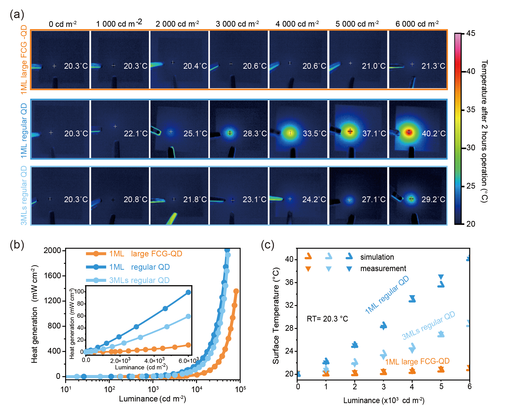
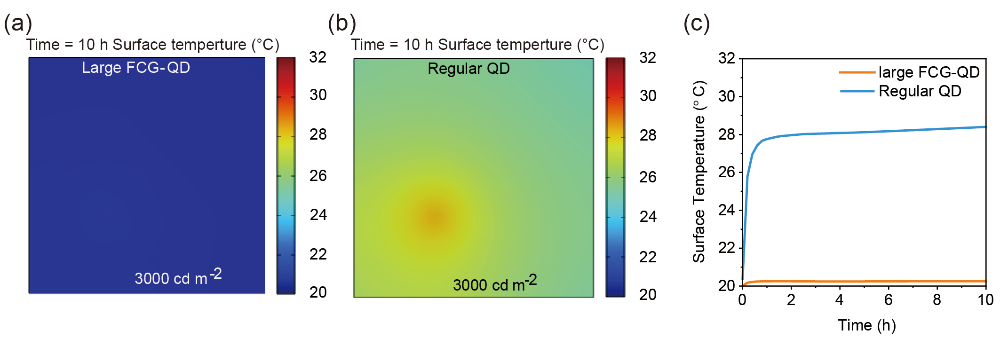
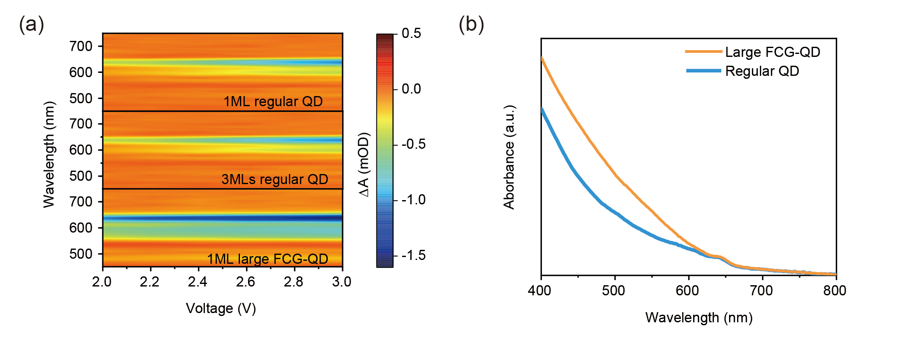
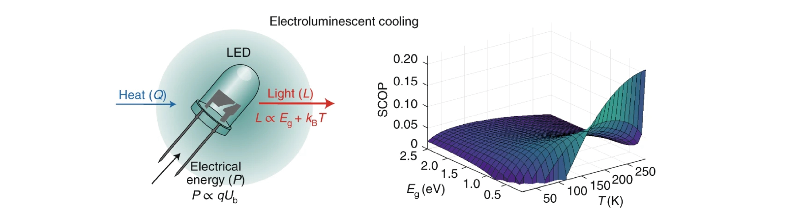
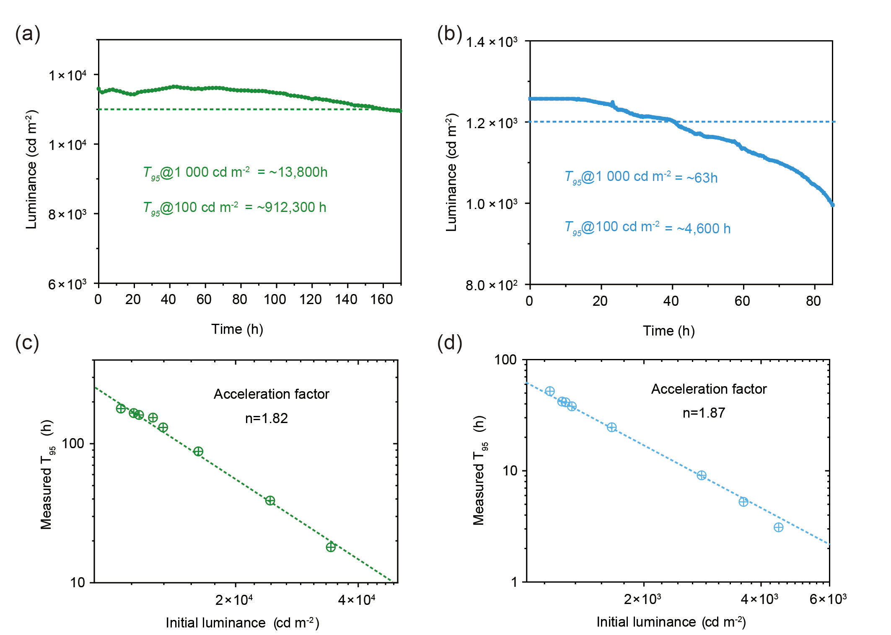
为什么"降电压 + 高效率"能同时换来长寿命
器件退化被认为源于量子点配体与空穴传输层的电化学不稳定性，而这些化学反应的速率可以通过降低驱动电压与温度来减缓。
此前用蓝宝石、硅基板改善散热虽提高寿命，却因驱动电压未有效降低而功率转换效率依旧偏低。本文同时降低驱动电压并提高功率转换效率，减少焦耳热与温升，从而缓解热致快速老化：1000 cd m⁻² 下 T95 超过 48 000 h，24 个器件平均约 43 000 h。
该策略随后推广到绿光（PLQY>90%）与蓝光（PLQY>70%）大尺寸量子点器件：带隙电压下分别实现约 3100 与 260 cd m⁻² 亮度，1000 cd m⁻² 下 T95 约 13 800 h 与 63 h。
效率滚降的真凶：不是俄歇，也不是电场，而是泄漏的高能电子
室外高亮度显示与照明要求器件在 3000 cd m⁻² 下仍高效，但电流一大效率就掉。论文逐个排查了四种候选机制，最后用单电子器件与低温实验锁定了答案。
焦耳热
滚降起始时电流并不高，难以产生足以猝灭发光的热量；热效应在低电流密度（1–2 A cm⁻²）区间一般认为可忽略。
俄歇复合
滚降时平均电子数仅 0.1–0.3，双电子占据率 1.6%–3.3%，且呈单激子衰减动力学，概率太低不足以主导滚降。
电场诱导猝灭
7 V 正偏的斯塔克效应仅相当于 −0.2 至 −0.5 V 反偏，对应 PL 强度下降不到 1%。
高能电子泄漏
电子因声子瓶颈滞留高能级，电压越高高能电子占比越大，越容易越过势垒泄漏进空穴传输层。
单电子器件：没有空穴，电流只能是漏电
用吸收峰更短的 PFDP 作空穴传输层制备 ITO/ZnO/TFB/QD/ZnMgO/Al 单电子器件，器件中不注入空穴，因此电流完全由电子从量子点泄漏到 TFB 贡献。结果很清晰：三种量子点中电子限域能力越强，高能电子漂白信号越强、漏电流越小——它们都能把电子注入高能态，但只有强限域的量子点能留住它们。
低温实验：把弛豫"冻住"
在 8 K、100 K、200 K、295 K 下测器件 3：200 K 以下电子浓度显著上升、高能级信号明显增长，低温下除基态外还可见 三个分立高能级，同时瞬态电流稳定值下降。在 2–3 V 不发光电压区间同样看到该趋势，从而排除了空穴注入的影响。
结论：生长更高势垒的壳层（如 ZnS）限域高能态电子，同时改善空穴注入，可有效减轻效率滚降。
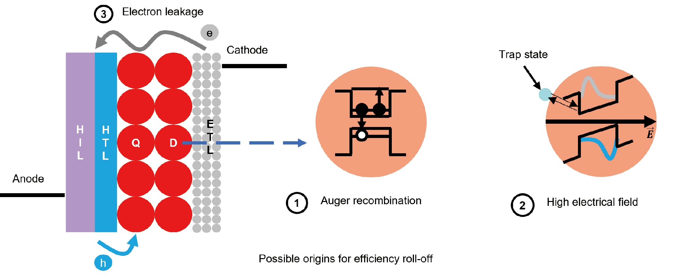
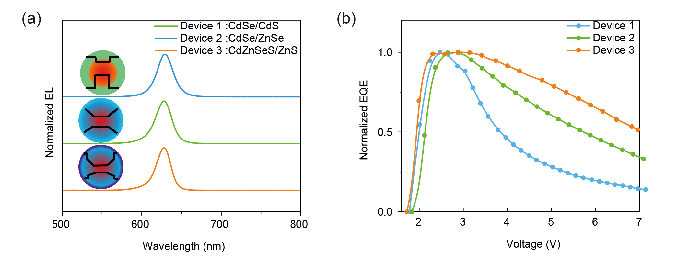
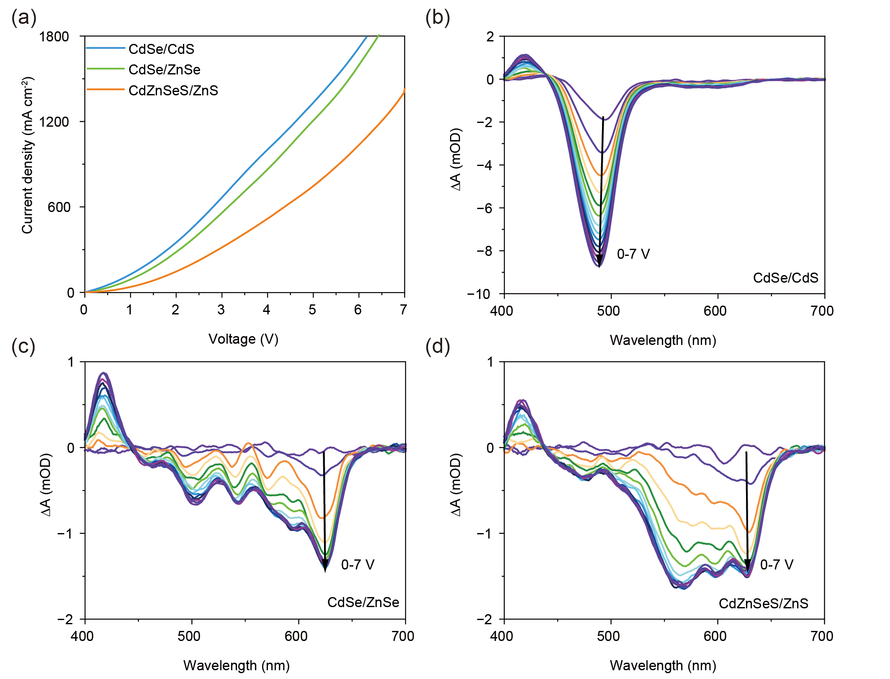
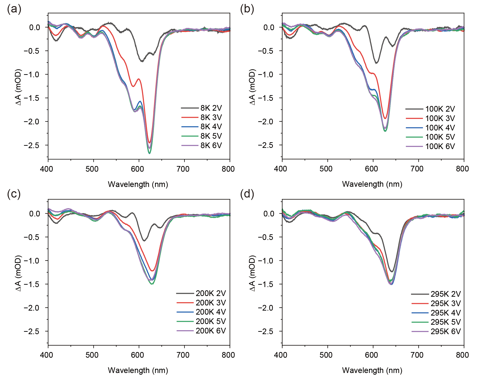
把滚降相关判据放在一起看
前四项是被排除或被证明可忽略的量级，最后一项是实测的漏电占比。
蓝光为什么短命：泄漏的电子把空穴传输层"打坏了"
蓝光 QD-LED 的 T50 只有 80 377 h，而红光已达 1.25 亿小时。论文用电激发瞬态吸收光谱做"原位无损体检"，把退化过程一步步拆开。
退化前后，电子侧毫无变化
在 5 V 加速退化至发光强度降为初始的 90%、75%、50% 各阶段，量子点电子漂白信号强度、峰形、注入速率以及荧光寿命均无明显变化——电子传输层没有损坏。
变慢的是空穴
归一化瞬态电致发光下降沿不变（复合速率不变），上升沿明显变慢：达到稳定发光的时间从 2480 ns 延长到 4060 ns。空穴是少数载流子，说明退化中空穴注入受阻。
斯塔克效应点名"受害者"
反偏压下 421 nm（TFB）与 482 nm（量子点）出现波长分辨的斯塔克信号。退化后相同反偏下 TFB 的斯塔克信号变小、量子点几乎不变。斯塔克信号正比于 Imχ₃×E²，χ₃ 反映材料储存与输运载流子的能力——空穴传输层被损坏了。
电容与仿真补充证据
退化后峰值电容下降、电容击穿电压升高，说明同一电压下总载流子密度降低（电子不变 → 空穴减少）。Silvaco TCAD 仿真在空穴传输层引入缺陷态后，空穴浓度与电场都下降、电子浓度无明显变化，与实验一致：断裂的 C–N / C–S / C–P 键在能隙中生成俘获空穴的缺陷态。
单载流子器件锁定元凶：电子
单电子器件中 PFDP 的斯塔克信号在 4 V 恒压下随时间衰减，而单空穴器件光谱几乎不变。破坏空穴传输层的正是从量子点泄漏出来的高平均能量电子。
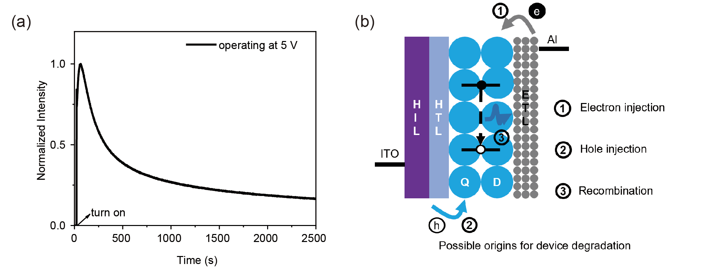
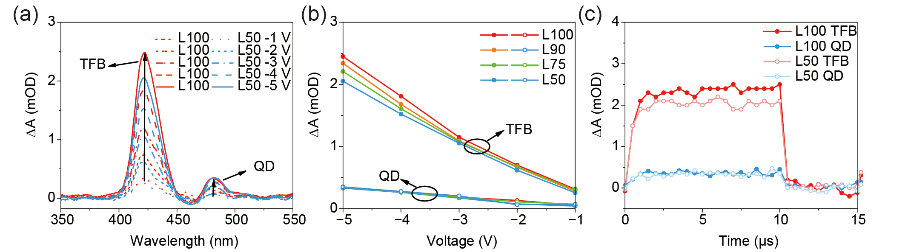
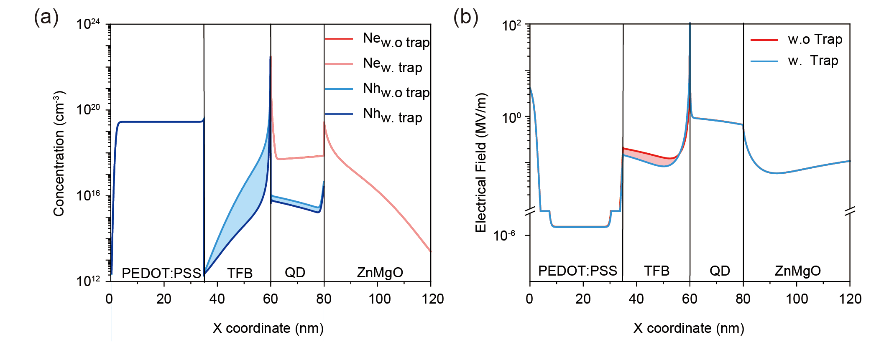
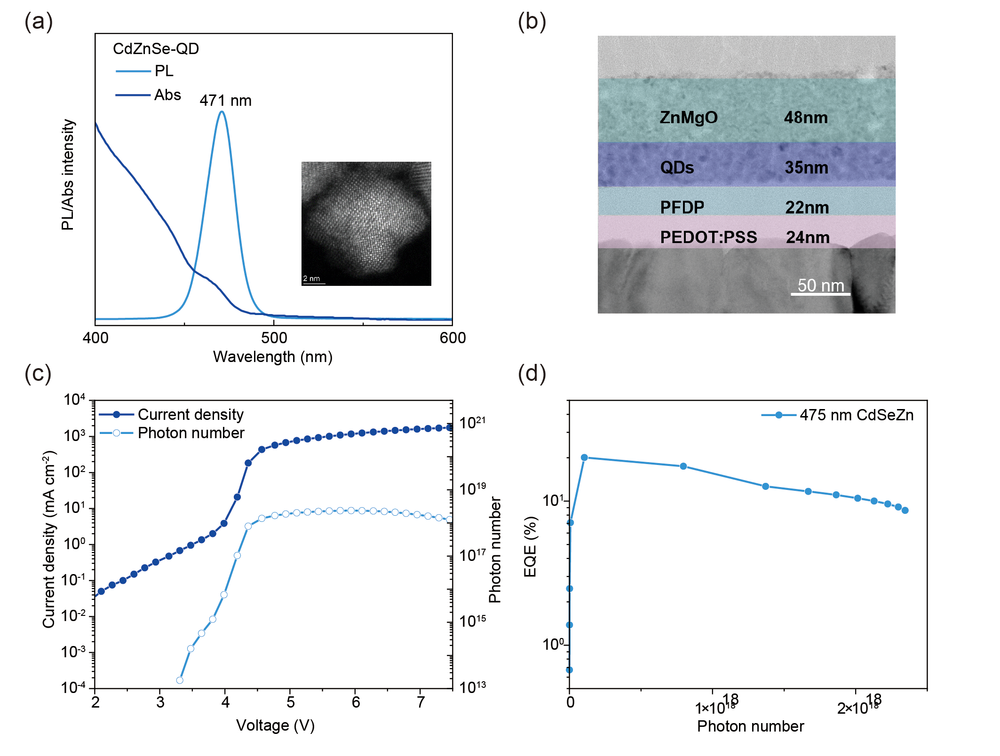
两条改善路线
既然元凶是高能电子泄漏，那么"挡住它"或者"降低它的能量"都能延长寿命。
高刚性、能级匹配的中间层
PBO 空穴迁移率与 TFB 相近；HOMO 为 5.85 eV（比 TFB 低 0.51 eV），正好位于量子点与 TFB 之间，缓解能级台阶；LUMO 为 −2.69 eV（比量子点导带高约 1 eV），把电子挡在发光层内。它还具备更好的电化学与热稳定性、更平整的表面。
结果：458 nm 纯蓝器件漏电降低、空穴注入加快，峰值 EQE 23%（约为无 PBO 器件的 2 倍），100 cd m⁻² 下 T50 达 41 022 h，T95 为 5264 h；40 个器件 EQE 平均 20.8%、标准差 2.3%。
把导带整体压下来
先通过增加发光波长整体降低导带能级，发现器件操作寿命随波长增加而减小、与带隙呈指数关系。随后在相同发光波长下合成 PLQY 接近 100%、发光峰 475 nm 的 CdSeS/ZnSeS/ZnS 量子点，其导带能级比 CdSeZn/ZnSeS/ZnS 低 0.3 eV，实测电子平均能量差值更大。
结果：器件总电流变化不大而复合电流增大，PFDP 漂白信号衰减降低——峰值 EQE 25%、T50 达 95 161 h，约为 CdSeZn 器件的 9 倍，是当时溶液法蓝光 QD-LED 的最高值。
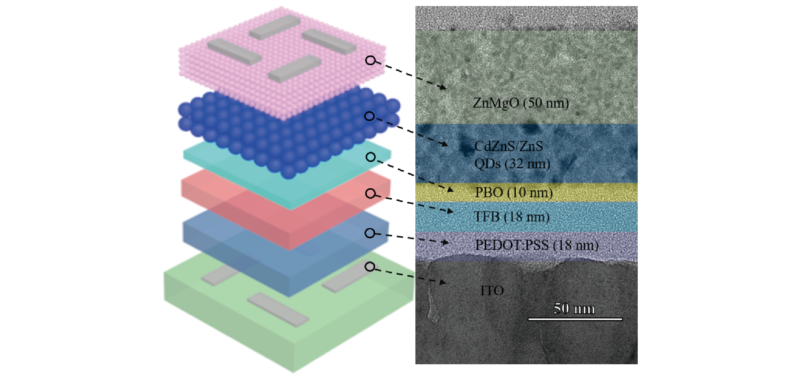
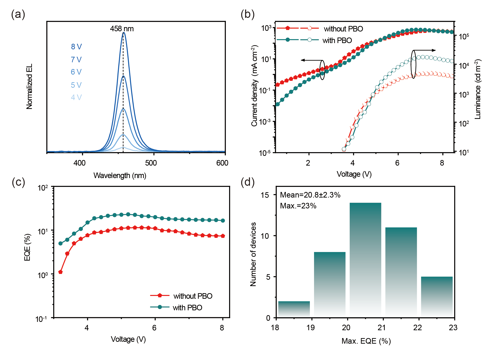
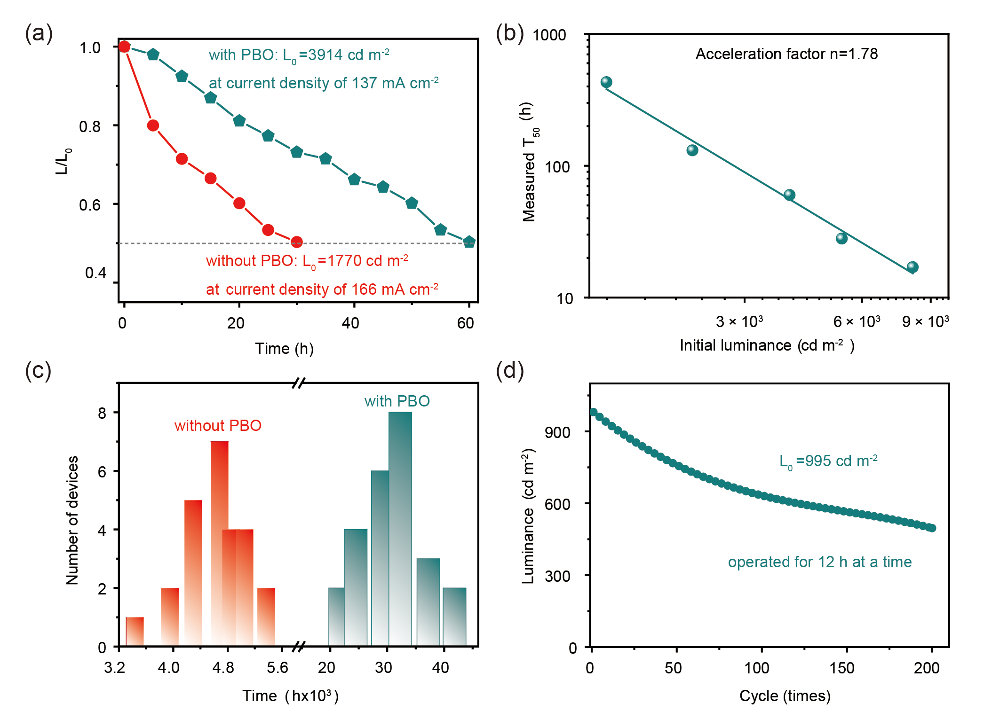
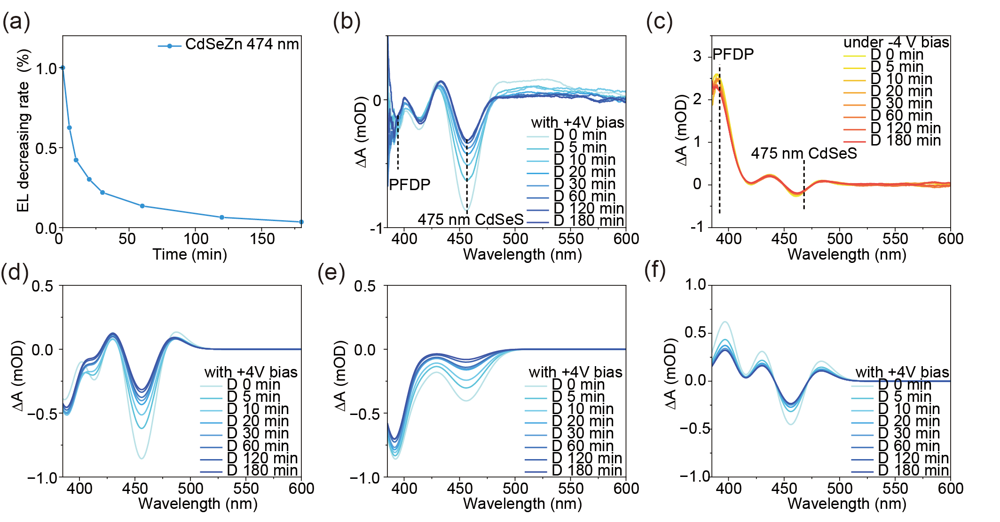
蓝光寿命的天花板被抬高了两次
100 cd m⁻² 初始亮度下的 T50（对数刻度）。文献蓝光值为论文引用的当时最好水平。
外量子效率对比
论文中几类器件的峰值外量子效率（EQE）。
全文脉络：从"造仪器"到"改器件"
六章之间是一条清晰的逻辑链：先解决"看不见"的问题，再用它解释现象，最后落到器件改善。
绪论：把问题定义清楚
梳理 QD-LED 的显示技术背景与商业化六大挑战（功耗、内量子效率、外耦合、蓝光寿命、无镉化、一致性稳定性），归纳电致发光的两条路径、效率滚降的三种假说与正/负向老化，指出"机理不清"才是试错式优化的根源。
造仪器、建模型
发明电激发瞬态吸收光谱仪（EE-TA），结合瞬态电致发光、瞬态电流、瞬态荧光、电吸收与电容-电压形成测试体系；提出蒙特-卡洛量子点激子复合模型并搭建器件运行模型，拟合出电子漏电概率 k₁ = 0.1。
低产热：增加费米能级劈裂
推导出亮度与发光中心密度成反比，用大尺寸单层全梯度合金量子点提高准费米能级劈裂（实测高近 100 meV），在低电压下实现高亮度与极低产热，1000 cd m⁻² 下 T95 超过 48 000 h。
效率滚降：抓到高能电子泄漏
排除焦耳热、俄歇复合与电场猝灭，用单电子器件与低温 EE-TA 证明高能态电子泄漏是滚降主因，并提出用更高势垒壳层（ZnS）限域高能电子。
蓝光退化：定位到空穴传输层
证明退化表相是空穴注入受阻、本质是泄漏电子损坏空穴传输层并生成俘获空穴的缺陷态；用 PBO 中间层与低导带 CdSeS 量子点两条路线分别实现 23% EQE / 41 022 h T50 与 25% EQE / 95 161 h T50。
总结与展望：指向电致发光制冷
总结机理图景，指出未来需继续提升低电压亮度与光外耦合效率以实现电致发光制冷（需以带隙 35% 以下的电压实现 35% EQE）、根本解决漏电，并满足蓝光 T95 > 200 h 的商业化最低需求。
原文图表
以下图片均直接取自论文原文（按章顺序排列），点击可放大。图号与图题引用自论文图注。
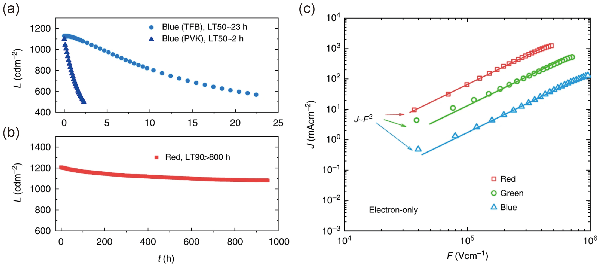
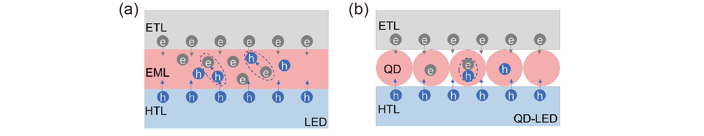
术语表
读懂这篇论文需要的十来个小概念。
- QD-LEDquantum-dot LED
- 以胶体量子点为发光层的电致发光器件，兼具有机物的溶液加工性与无机半导体的稳定性与色纯度。
- 量子限域效应quantum confinement
- 量子点在三维方向束缚电子与空穴，尺寸越小带边跃迁能量越高，因而发光波长可由粒径调谐。
- 准费米能级劈裂EFS
- 电子与空穴准费米能级之差。它决定发射光强，劈裂越大、发光越强；可由注入电荷与发光中心密度调控。
- 基态漂白GSB
- 激发态布居增加导致基态吸收减少，在瞬态吸收谱上表现为负 ΔA；在量子点中主要由电子贡献，是读取电子浓度的标尺。
- 斯塔克效应Stark effect
- 外加电场改变量子点振子强度，使吸收截面依赖于电场。信号正比于 Imχ₃×E²，可用于表征材料储存与输运载流子的能力。
- 声子瓶颈phonon bottleneck
- 高能态电子因缺少可接受能量的声子通道而弛豫缓慢，长时间停留在高能级，是电子泄漏的前提。
- 俄歇复合Auger recombination
- 多载流子占据同一量子点时，复合能量转移给第三个载流子并最终以热耗散，不发光。本文用平均电子数与泊松统计证明其概率很低。
- 效率滚降efficiency roll-off
- 电流（电压）增大时外量子效率下降的现象，制约 QD-LED 在高亮度显示与照明中的应用。
- Förster 共振能量转移FRET
- 供体与受体间的非辐射能量传递，有效距离约 10 nm。在 QD-LED 中既可能让传输层激子把能量传给量子点，也可能造成 PL 猝灭。
- 带尾态band tail states
- 有机半导体能量无序造成的能隙内态，为电子提供越过势垒泄漏的通道，是 PL 与 EL 效率差异的来源之一。
- T50 / T95
- 亮度衰减到初始值 50% / 95% 所需时间，是衡量器件工作寿命的常用指标，需注明初始亮度与测试条件。
- 加速因子n
- 寿命与初始亮度满足 L₀ⁿ·T = 常数，据此可由高亮度短时测试外推低亮度下的长寿命；本文拟合得 n≈1.71–1.87。
- 外量子效率EQE
- 器件发射到外部的光子数与注入电子数之比，受内量子效率与外耦合效率共同限制。
- 能量转化效率PCE
- 输出光功率与输入电功率之比。本文器件在 1000–6000 cd m⁻² 范围内保持 21–23%。
结论与展望
电子泄漏是效率滚降与蓝光退化的共同主线：滚降源于高能态电子因声子瓶颈不弛豫而泄漏，蓝光退化源于泄漏电子损坏空穴传输层——限域高能电子（更高势垒壳层、降低导带能级）可以同时改善两者。
方法学先行
自主研发的 EE-TA 结合瞬态电流与瞬态电致发光，配合微观工作过程计算模型，使各功能层的载流子动力学、平衡浓度、斯塔克效应与漏电影响得以清晰表征。
低产热与长寿命可兼得
以大尺寸单层全梯度合金量子点提高量子点平均电子数，在低驱动电压下获得高亮度：红光器件 1000–6000 cd m⁻² 下 PCE 达 21–23%，1000 cd m⁻² 下 T95 达 48 000 h。
界面与能级工程是蓝光的解
PBO 中间层实现 23% 峰值 EQE 与 41 000 h 以上 T50；降低电子平均能量 0.3 eV 以上使 T50 达 95 161 h——均为当时全溶液法纯蓝 QD-LED 的最高水平。
冲击电致发光制冷
目前内量子效率已超过 95%，提升光外耦合效率是继续提高 EQE 的有效方案。基于现在 35% 左右的峰值 EQE，若要实现 QD-LED 电致发光制冷，需要以带隙 35% 以下的电压实现 35% 的外量子效率——进一步提升低电压亮度（例如继续增大量子点尺寸）是可行方向。
蓝光商业化的最低门槛
理想 QD-LED 的亮度应随电流线性增长、EQE 不随电压或电流变化。高能电子泄漏虽已确认为滚降起源并用量子点限域加以减缓，但漏电尚未根本解决；蓝光仍需满足 T95 > 200 h 的最低需求，可继续降低电子平均能量或改用更稳定的空穴传输层。